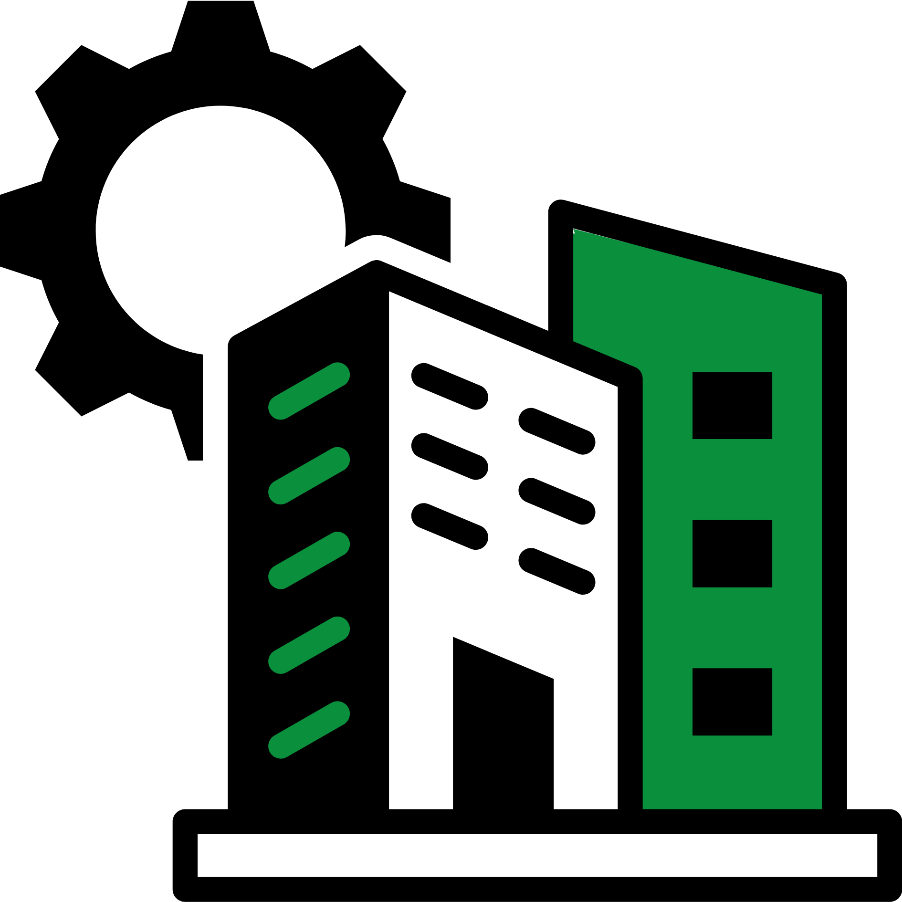

GIGA
¡Conectamos tu mundo!
¡Conectamos tu mundo!
En GIGA ofrecemos soluciones tecnológicas integrales enfocadas en el diseño, implementación, optimización y mantenimiento de redes de datos. Nuestro objetivo es garantizar conectividad continua, alto rendimiento y seguridad en la transmisión de información. Nos adaptamos a diferentes entornos, desde hogares hasta empresas, aplicando buenas prácticas y estándares de la industria para asegurar redes eficientes, escalables y confiables.

Diseñamos e instalamos redes LAN y WiFi aplicando criterios técnicos de ingeniería de redes. Analizamos el entorno físico y lógico para definir la mejor arquitectura de red, considerando factores como distancia, interferencias electromagnéticas, cantidad de dispositivos y tipo de tráfico.
Implementamos cableado estructurado ordenado, etiquetado y documentado para facilitar mantenimiento futuro. En redes inalámbricas, realizamos una distribución estratégica de puntos de acceso para garantizar cobertura uniforme y evitar saturación.
También contemplamos la expansión futura de la red, dejando preparada la infraestructura para crecimiento sin necesidad de rediseños completos.
Configuramos dispositivos de red aplicando parámetros avanzados de administración. Esto incluye direccionamiento IP optimizado, configuración de DHCP, creación de VLANs y mejoras en seguridad mediante control de accesos.
Implementamos reglas de firewall básicas y avanzadas según el entorno, además de políticas de QoS para priorizar tráfico crítico.
También optimizamos rutas de comunicación entre dispositivos para reducir latencia y evitar congestión de red.
El mantenimiento que realizamos se basa en la prevención de fallas antes de que afecten la operación. Supervisamos el estado de la red mediante revisiones periódicas.
Realizamos actualizaciones de firmware, verificación de configuraciones, pruebas de velocidad y detección de puntos críticos.
Aplicamos diagnóstico técnico detallado para identificar el origen del problema y restaurar el servicio rápidamente.
Brindamos soporte técnico enfocado en resolver incidentes de red de manera eficiente y profesional.
Utilizamos herramientas de diagnóstico para analizar el comportamiento de la red y detectar el origen del problema con precisión.
Además de solucionar fallas, ofrecemos recomendaciones para optimizar el uso de la red, mejorar la seguridad y evitar problemas recurrentes.